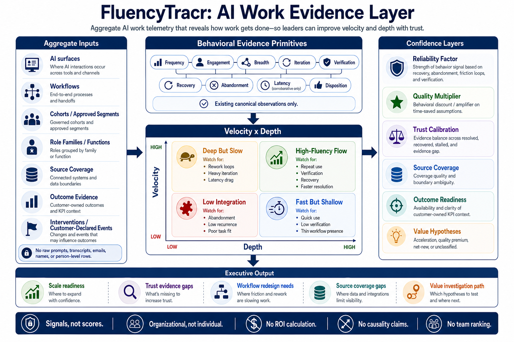

Sheet 1 · Macro view
FluencyTracr is an evidence layer for deciding where AI is ready to scale.
It turns aggregate AI usage telemetry into governed action guidance: where to scale, where to coach, where to redesign workflows, where trust needs calibration, and where the evidence is not strong enough yet.
AI work telemetry
Workflow runs, search, autocomplete, summaries, MCP usage, agent activity, verification and feedback context.
Behavior signals
Usage, velocity, breadth, depth repertoire, reliability, quality, abandonment, recovery, and trust evidence.
Fail-closed gates
Aggregate-only interpretation. No individual scoring, no team ranking, no unsupported ROI claim.
Scale readiness zones
Ready to scale, enablement opportunity, workflow design opportunity, trust calibration, adoption expansion, or hold.
Value investigation
Point leaders to the workflows and cohorts where a stronger value investigation is defensible.
Sheet 2 · Variables and flow
The model separates raw events, derived behavior, gates, and executive action.
The important design choice is that per-user calculations happen only inside the protected boundary. What crosses into the readout is aggregate evidence.
| Layer | Variables / signals | What it answers | Current posture |
|---|---|---|---|
| Surface taxonomy | Workflow surfaces, standalone surfaces, AGENT sub-surfaces, verification signals joined to parent surfaces where safe. | Which AI touchpoints are in scope? | Governed taxonomy exists; some trust and skill paths still held. |
| Velocity | Frequency, engagement, breadth. | Is AI use recurring and broad enough to suggest adoption momentum? | Implemented as aggregate distributions. |
| Depth Repertoire | Surface repertoire x repeat use / refinement. | Is use spreading across surfaces and returning repeatedly, or is it shallow volume? | Promoted for aggregate contract hardening after three-window stability test. |
| Quality | Completion, abandonment, recovery, friction patterns, Quality Multiplier. | Are workflows completing cleanly enough to support stronger interpretation? | Supported as aggregate behavioral evidence. |
| Reliability | Abandonment, recovery, friction loops, latency as corroborative context, Reliability Factor. | Where is AI use brittle, interrupted, or in need of workflow redesign? | Supported as aggregate context; latency cannot trigger surfacing alone. |
| Trust / verification | Citation clicks, votes, feedback, verification presence, parent attribution quality. | Is there evidence users review or calibrate AI output? | Held as governed readout until strict parent attribution is reliable. |
| Reusable leverage / skills | Skill-read availability, reusable workflow metadata, named workflow leverage, invocation coverage. | Is AI moving from one-off use to reusable organizational leverage? | Research-only; metadata observability gaps remain. |
| Segmentation | Department/function, role family, tenure, region, manager/IC, velocity band, depth band. | Where should enablement, redesign, or scale action happen? | Concept defined; runtime support held until approved aggregate joins exist. |
| Outcome context | Support, sales, onboarding, or other customer-owned aggregate KPIs. | Where might behavioral evidence align with business outcomes? | Investigation-routing only; non-causal by default. |
- Surface coverage
- Window stability
- Suppression rate
- Join coverage
- Enough volume
- Enough time
- Stable baseline
- Low ambiguity
- Aggregate only
- No user IDs
- No HR records
- No raw prompts
- No causal claim
- No ROI claim
- No ranking
- No productivity score
Sheet 3 · Value to Glean
The value is better value-realization evidence, not bigger ROI claims.
FluencyTracr helps Glean move from “AI was used” to “AI appears ready to scale here, needs support there, and warrants a value investigation in these places.”

Ready To Scale
Strong aggregate evidence, stable use, and meaningful depth. Action: expand playbooks and reinforce the pattern.
Enablement Opportunity
Usage exists, but depth or repeat use is weak. Action: train, coach, and clarify high-value use cases.
Workflow Design Opportunity
Usage exists, but friction, abandonment, or recovery patterns suggest the workflow needs redesign.
Trust Calibration Opportunity
Usage exists, but verification or feedback evidence is weak. Action: reinforce review and trust behavior.
Adoption Expansion Opportunity
Activation or surface repertoire is narrow. Action: expand awareness and targeted use cases.
Insufficient Evidence
Suppressed, unstable, missing metadata, or unsafe. Action: do not overinterpret yet.
| Glean use case | What FluencyTracr adds | Business value |
|---|---|---|
| Value realization | Evidence-readiness layer under ROIbot and value modeling. | Know when a claim is directional, evidence-backed, or blocked. |
| Customer success / AIOM planning | Action posture by workflow, surface, or approved segment. | Prioritize where to scale, coach, redesign, or hold. |
| Executive storytelling | Simple portfolio view of AI scale readiness. | Move beyond adoption counts toward work-change evidence. |
| Product and data science | Governed signal backlog: trust, skill reads, reusable leverage, outcome joins. | Focus instrumentation work on the signals that unlock stronger claims. |
| Enablement | Connect observed behavior with the AI Fluency Instrument. | Pair behavior evidence with readiness, confidence, intent, and perceived impact. |